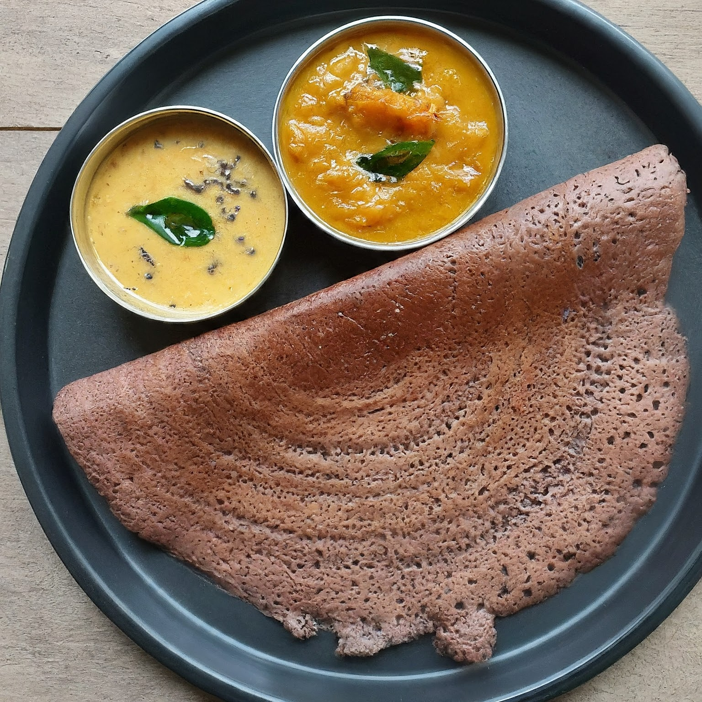
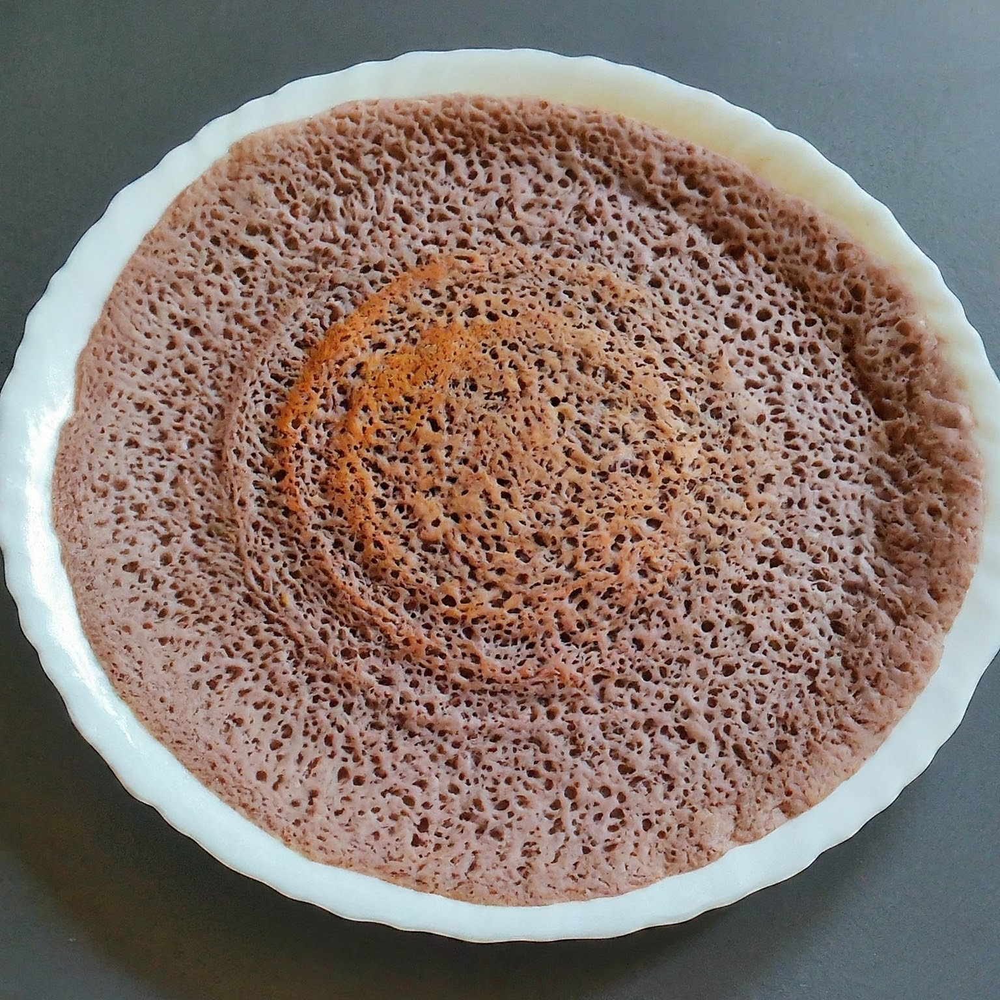
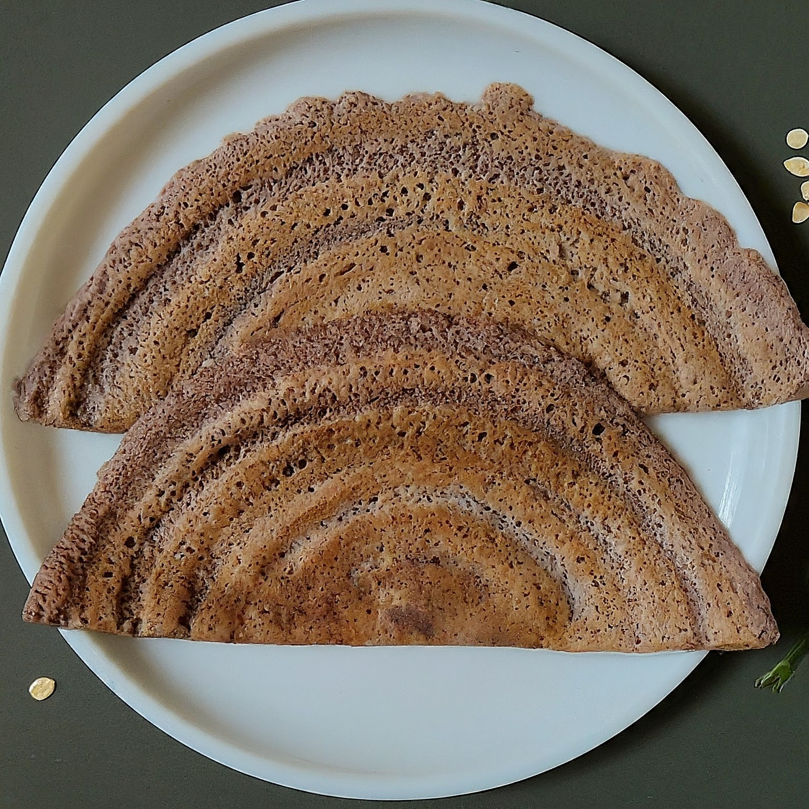
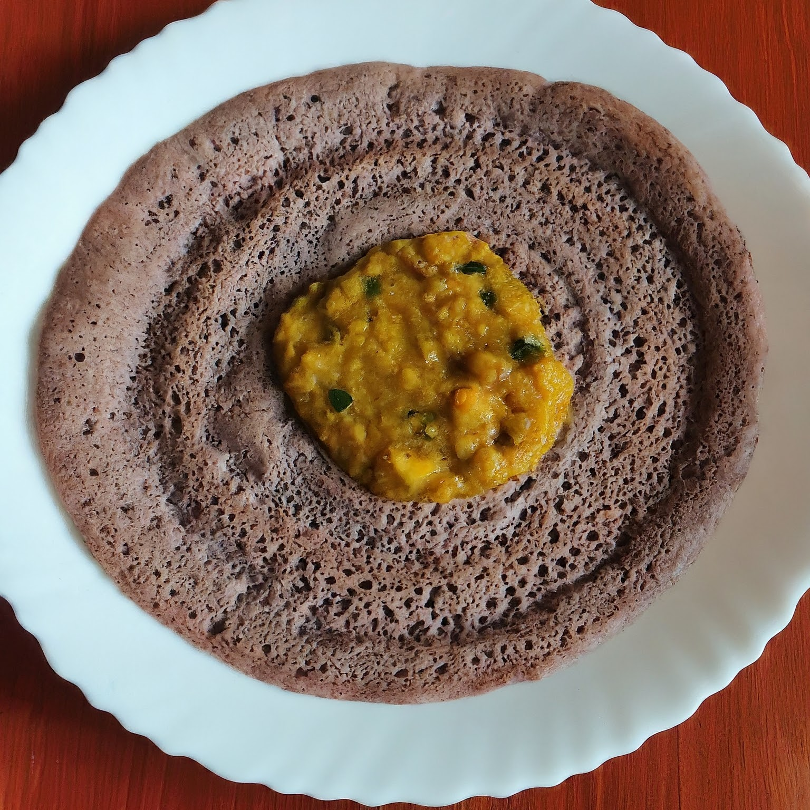
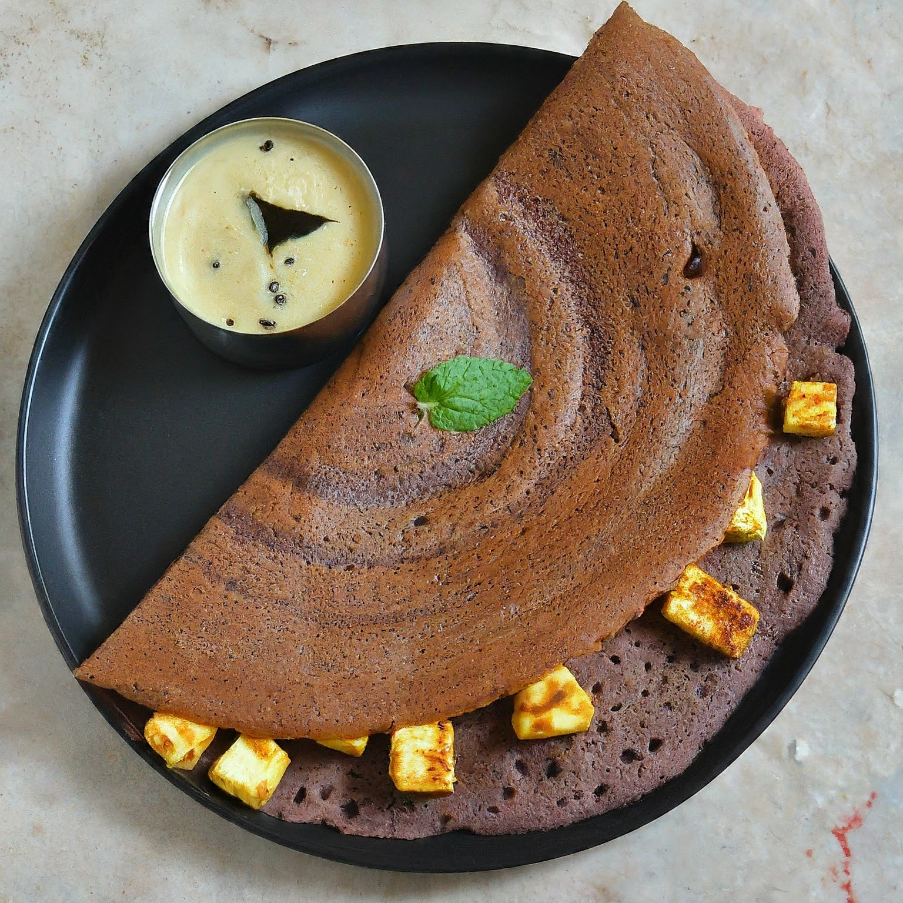

Delicious & Healthy Ragi Dosa Recipes
Ragi, also known as finger millet, is an ancient grain that is rich in calcium, iron, and fiber. Incorporating Ragi into your meals is a great way to boost nutrition, and what better way to do it than with crispy and delicious Ragi dosas? At Battermami, we offer fresh Ragi batter to help you prepare these healthy dosas in no time!
1. Classic Crispy Ragi Dosa

This is the traditional method of making Ragi dosa, perfect for a crispy, healthy meal that can be enjoyed with chutney or sambar.
Ingredients:
- 1 cup Battermami Ragi Dosa batter
- 1 tsp oil or ghee for cooking
- Coconut chutney or sambar for serving
Instructions:
- Heat a non-stick tawa (griddle) and lightly grease it with oil or ghee.
- Pour a ladle of Battermami Ragi dosa batter onto the tawa and spread it thinly in a circular motion.
- Cook on medium heat for 2-3 minutes until the edges start to lift and the dosa becomes crispy.
- Flip and cook the other side for another minute.
- Serve hot with coconut chutney or sambar.
2. Ragi Onion Dosa

This variation adds a delightful crunch of onions to the crispy Ragi dosa, elevating its flavor and making it more filling.
Ingredients:
- 1 cup Ragi Dosa batter (from Battermami)
- 1/2 cup finely chopped onions
- 2 tbsp chopped coriander leaves
- 1 tsp cumin seeds
- Oil for cooking
Instructions:
- In a small bowl, mix the chopped onions, coriander leaves, and cumin seeds.
- Heat a tawa, grease it lightly, and pour a ladle of Ragi dosa batter.
- Quickly sprinkle the onion mixture evenly on the dosa.
- Cook on medium heat until the dosa turns crispy. Flip and cook for 1 more minute.
- Serve with chutney or sambar.
3. Instant Ragi Oats Dosa

This dosa combines the goodness of Ragi and oats, offering a wholesome and fiber-rich meal that is perfect for breakfast or dinner.
Ingredients:
- 1/2 cup Battermami Ragi batter
- 1/4 cup oats, powdered
- 1/4 cup rice flour
- 1/2 cup water (as needed)
- Salt to taste
- Oil for cooking
Instructions:
- In a bowl, mix Ragi batter, oats powder, rice flour, and water to form a smooth batter.
- Heat a tawa and pour a ladle of batter. Spread it evenly to make a thin dosa.
- Cook for 2-3 minutes on medium heat until crispy. Flip and cook for another minute.
- Serve hot with chutney or curd.
4. Ragi Masala Dosa

If you love the classic Masala Dosa, try this nutritious Ragi version filled with spicy mashed potato masala.
Ingredients:
- 1 cup Battermami Ragi batter
- 2 medium boiled potatoes
- 1/2 tsp mustard seeds
- 1/4 tsp turmeric powder
- 1/2 tsp cumin seeds
- 1 chopped green chili
- Few curry leaves
- Oil for cooking
- Salt to taste
Instructions:
- Mash the boiled potatoes and set aside.
- Heat oil in a pan, add mustard seeds, cumin seeds, green chili, curry leaves, and turmeric powder. Stir well and add mashed potatoes. Cook for 2-3 minutes. Add salt and set the masala filling aside.
- Heat a tawa, pour the Ragi batter, and spread it thin.
- Once the dosa is crispy, place a spoonful of potato masala in the center and fold the dosa.
- Serve hot with coconut chutney or sambar.
5. Ragi Paneer Dosa

For a protein-packed meal, try this Ragi dosa stuffed with spicy, grated paneer. A perfect combination of taste and health!
Ingredients:
- 1 cup Battermami Ragi batter
- 100g grated paneer (cottage cheese)
- 1/2 tsp red chili powder
- 1/4 tsp garam masala
- Salt to taste
- Oil for cooking
Instructions:
- Mix the grated paneer with red chili powder, garam masala, and salt.
- Heat a tawa and pour the Ragi batter. Spread it evenly.
- Once crispy, place the paneer mixture in the center and fold the dosa.
- Cook for another minute and serve hot with chutney.